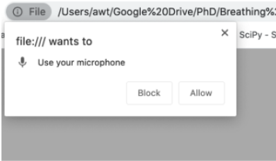

Allowing Microphone Access
When first loading Bubble Breather, you will be prompted to allow
the webpage to “access your microphone”. Microphone access must be
proved to allow in-game breath controls. Note that all audio data is
processed locally - no data shared or sent to third parties.
What is Stacked Breathing?
- Stacked Breathing is an exercise that helps you take deeper breaths than you might otherwise be able to
- In the short term, this helps you breathe more easily by dislodging fluids from lungs and clearing your airways
- With practice, breath stacking can help strenghten your muscles and ease your beathing more generally
What is PEP Therapy?
- PEP Therapy is an exercise that helps loosen and clear mucus that gets trapped in your airway
- During this exercise, you blow forcefully through pursed lips (e.g., the same way you would blow out candles ona birthday cake)
- If your health-care provider has suggested a breathing resistance device (e.g., a Breather or Flutter), you can optionally use it with this game.
Microphone Settings and Technical Requirements
Bubble Breather is officially supported in Google Chrome
Support for additional browsers will be provided in future revisions of the game
Microphone Settings
Bubble Breather uses your device's speaker and microphone to sense
your breathing.
Supported Devices
While the long-term goal of the game is to support a wireless breath
sensing on a wide range of mobile devices, the game has currently
been confirmed to function correctly on the suported devices list
below.
- 13" Macbook Pro - Built-in Speaker + Microphone
- Blue Yeti Microphone (https://www.bluedesigns.com/products/yeti/)

Microphone Troubleshooting
Ensure volume is unmuted: Bubble Breather relies on high-frequency sound to detect your breathing patterns - make sure your device's audio is unmuted and set to a high level.
Position yourself close to your device: Bubble Breather breath sensing is most accurate when you are positioned close to your device -- for best results, try to maintain a 50 - 75cm distance from your device during gameplay.
Play in a quiet area: Background noise can interfere with Bubble Breather’s breath sensing accuracy - for best results, make sure you play the game in a fairly quiet setting.
Avoid unnecessary movement: Bubble Breather senses your breathing by detecting subtle movements in your chest and abdomen -- therefore, any large movements can interfere with the games ability to sense your breathing accurately.